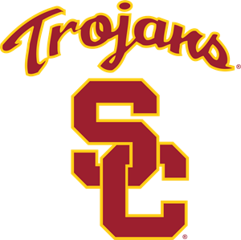

Cheny Yang
University Park Campus
University of Southern California
Los Angeles, CA 90097
213-740-2311
chenyyan@usc.edu
Objective
Diligent college student interested in developing skills in design. Detail-oriented and organized. Prepared and willing to expand my creative skill sets.
Education
University of Southern California
Aug 2022 ~ Present
'Iolani School
Aug 2019 ~ May 2022
Experience
Performing Arts Co-Chair
Korean Culture Night Club, USC
Jan 2023 ~ Present
- Directed dance performance for annual show
- Learned choreography in advance and taught club members
during weekly sessions/rehearsals
Reslife Prefect
Residential Life Leadership Program, 'Iolani School
Aug 2020 ~ Jun 2022
- Led weekly dorm student council meetings; participated in student council executive meetings
- Led new student orientation program; planned and hosted all student dorm meetings and activities
- Completed leadership training sessions; defined the role as one of two inaugural prefects
- Reviewed all aspects of the dorm life, making recommendations for improvements
Student Tutor
'Iolani School
Aug 2019 ~ Jun 2021
- Met with various students to help with test prep and homework in several subjects: chemistry, algebra, geometry
Skills
Programming Languages
Foreign Languages
Dances
